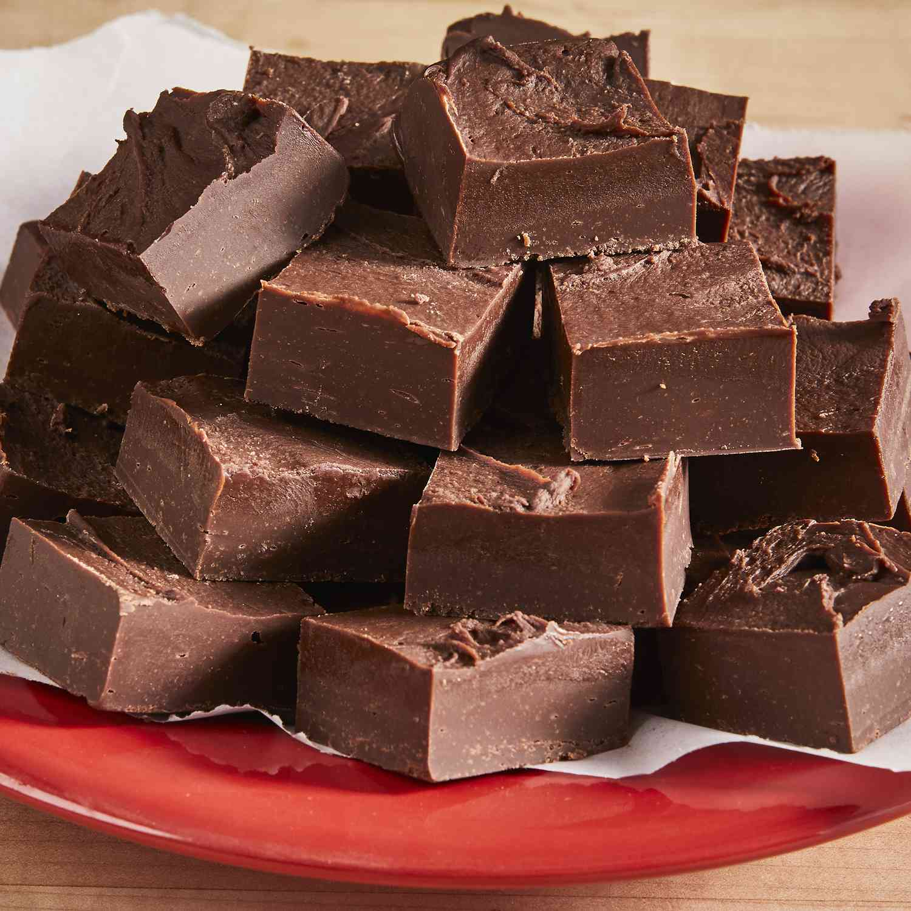

Fudge

What is fudge?
Fudge is a type of homemade candy with a smooth and creamy texture. It's usually made on the stove with sugar, butter, and milk. There are many varaieties of fudge, but the most popular type is chocolate fudge.
- Prep Time: 5 minutes
- Cook Time: 5 minutes
- Additional Time: 2 hours
- Total Time: 2 hours 10 minutes
- Servings: 16
- Yield: 16 pieces
Ingredients
- Chocolate chips: (3 cups) This classic fudge recipe starts with three cups of semisweet chocolate chips.
- Sweetened condensed milk: (14 ounces) One can of sweetened condensed milk ensures a sweet, creamy, and absolutely decadent chocolate fudge.
- Butter: (1/4 cup unsalted butter, cut into pieces) Butter is melted with the chocolate and sweetened condensed milk., creating an even richer texture.
Directions
-
Combine chocolate chips, condensed milk, and butter in large microwave-safe bowl. Microwave on medium heat until chips are melted, 3 to 5 minutes, stirring once or twice during the cooking.
-
Meanwhile, generously grease an 8-inch square glass baking dish.
-
Remove chocolate mixture from the microwave and stir in nuts(skip this step if you're not using nuts). Pour into the prepared dish.
-
Refrigerate until fudge is set, about 2 hours.
-
Cut into 16 squares.